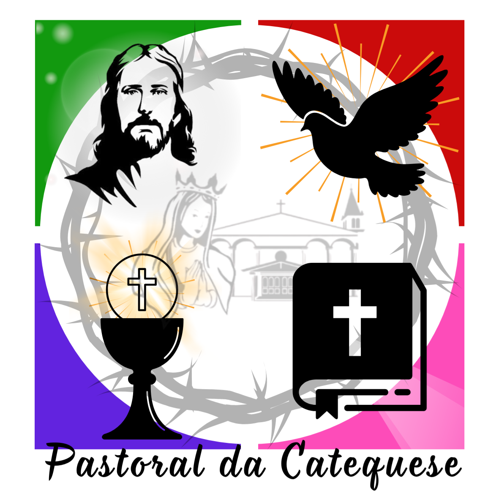

<!DOCTYPE html>
<html lang="pt-br">
<head>
    <meta charset="UTF-8">
    <meta name="viewport" content="width=device-width, initial-scale=1.0">
    <title>Itinerário RICA - Catecumenato 2026/2027</title>
    <!-- Scripts necessários para rodar React no navegador sem build -->
    <script src="https://unpkg.com/react@18/umd/react.production.min.js"></script>
    <script src="https://unpkg.com/react-dom@18/umd/react-dom.production.min.js"></script>
    <script src="https://unpkg.com/@babel/standalone/babel.min.js"></script>
    <script src="https://cdn.tailwindcss.com"></script>
    <!-- Ícones Lucide -->
    <script src="https://unpkg.com/lucide@latest"></script>
    <style>
        @import url('https://fonts.googleapis.com/css2?family=Inter:wght@400;600;700&display=swap');
        body { font-family: 'Inter', sans-serif; }
        .path-line {
            stroke-dasharray: 8;
            animation: dash 20s linear infinite;
        }
        @keyframes dash {
            to { stroke-dashoffset: -200; }
        }
        /* Estilo para quadrinhos */
        .comic-panel {
            position: relative;
            border: 3px solid #1f2937;
            box-shadow: 6px 6px 0px #1f2937;
            overflow: hidden;
            transition: transform 0.2s;
        }
        .comic-panel:hover {
            transform: scale(1.02) rotate(-1deg);
        }
        .comic-bubble {
            position: relative;
            background: white;
            border: 2px solid #1f2937;
            border-radius: 12px;
            padding: 10px;
            z-index: 10;
        }
    </style>
</head>
<body class="bg-gray-50 text-gray-900">
    <div id="root"></div>

    <script type="text/babel">
        const { useState, useEffect } = React;

        // Componente de Ícone Customizado
        const Icon = ({ name, className, size = 24 }) => {
            useEffect(() => {
                if (window.lucide) {
                    window.lucide.createIcons();
                }
            }, [name]);
            return <i data-lucide={name} className={className} style={{width: size, height: size}}></i>;
        };

        const App = () => {
            const [activeStage, setActiveStage] = useState(0);

            const stages = [
                {
                    title: "1. Pré-Catecumenato",
                    subtitle: "Primeiro Anúncio, o Querigma",
                    period: "Evangelização e Primeiro Contato",
                    icon: "cross",
                    color: "bg-blue-100 border-blue-500 text-blue-800",
                    accent: "bg-blue-500",
                    description: "Momento de busca, acolhida e proclamação do Querigma. Onde a semente da fé começa a germinar através da curiosidade e do desejo de conhecer o Senhor.",
                    rites: [
                        { name: "Rito de Admissão (Acolhida)", date: "25/04/2026", time: "Missa das 18h", desc: "Marca o início oficial da caminhada como catecúmeno." }
                    ],
                    zacchaeusIcon: "user-check",
                    zacchaeusParallel: "Como Zaqueu que subiu no sicômoro para ver Jesus, o candidato busca superar os obstáculos para ter um primeiro olhar sobre o Mestre.",
                    comic: [
                        { img: "zaqueu-1-1.jpg", icon: "users", text: "Zaqueu tenta ver Jesus, mas a multidão o impede.", alt: "[Imagem de Zaqueu na multidão]" },
                        { img: "zaqueu-1-2.jpg", icon: "tree-deciduous", text: "Ele não desiste e sobe no sicômoro.", alt: "[Imagem de Zaqueu subindo na árvore]" },
                        { img: "zaqueu-1-3.jpg", icon: "eye", text: "Jesus se aproxima e para debaixo da árvore.", alt: "[Imagem de Jesus olhando para Zaqueu]" }
                    ]
                },
                {
                    title: "2. Catecumenato",
                    subtitle: "Tempo de Formação Integral",
                    period: "Instrução e Vida Comunitária",
                    icon: "book-open",
                    color: "bg-green-100 border-green-500 text-green-800",
                    accent: "bg-green-500",
                    description: "Período de amadurecimento na fé, escuta da Palavra e inserção na comunidade. É o tempo de 'fazer morada' com Jesus e aprender Seus caminhos.",
                    rites: [
                        { name: "Entrega do Símbolo - CREDO", date: "12/09/2026", time: "Missa das 18h", desc: "A Igreja entrega a síntese da fé aos seus filhos." },
                        { name: "Entrega da ORAÇÃO DO PAI NOSSO", date: "05/12/2026", time: "Missa das 18h", desc: "O aprendizado da oração filial do cristão." }
                    ],
                    zacchaeusIcon: "home",
                    zacchaeusParallel: "Jesus diz: 'Zaqueu, desce depressa! Hoje quero ficar em tua casa'. É o tempo da convivência e do aprendizado na intimidade da casa (Igreja).",
                    comic: [
                        { img: "zaqueu-2-1.jpg", icon: "message-circle", text: "'Zaqueu, desce depressa! Hoje vou à tua casa'.", alt: "[Imagem de Jesus chamando Zaqueu]" },
                        { img: "zaqueu-2-2.jpg", icon: "arrow-down", text: "Ele desce feliz para receber o Senhor.", alt: "[Imagem de Zaqueu descendo da árvore]" },
                        { img: "zaqueu-2-3.jpg", icon: "home", text: "Eles entram na casa para conversar e cear.", alt: "[Imagem de Jesus entrando na casa]" }
                    ]
                },
                {
                    title: "3. Purificação e Iluminação",
                    subtitle: "Tempo de Preparação Próxima",
                    period: "Geralmente durante a Quaresma",
                    icon: "flame",
                    color: "bg-purple-100 border-purple-500 text-purple-800",
                    accent: "bg-purple-500",
                    description: "Intenso retiro espiritual focado na conversão do coração. Tempo de preparar-se para o sepultamento do homem velho e a ressurreição em Cristo.",
                    rites: [
                        { name: "Rito da Eleição", date: "14/02/2027", time: "Missa das 18h", desc: "Passagem para o tempo de Purificação e Iluminação." },
                        { name: "1º Escrutínio", date: "28/02/2027", time: "Missa das 18h", desc: "3º Domingo da Quaresma." },
                        { name: "2º Escrutínio", date: "07/03/2027", time: "Missa das 18h", desc: "4º Domingo da Quaresma." },
                        { name: "3º Escrutínio e Entrega da Cruz", date: "14/03/2027", time: "Missa das 18h", desc: "5º Domingo da Quaresma." },
                        { name: "Retiro do Catecumenato", date: "20/03/2027", time: "08h às 17h", desc: "Encerramento na missa das 18h." },
                        { name: "Preparação Imediata", date: "28/03/2027", time: "09h", desc: "Preparação para os Sacramentos." },
                        { name: "Vigília Pascal: Sacramentos", date: "28/03/2027", time: "Noite", desc: "BATISMO, CONFIRMAÇÃO e EUCARISTIA." }
                    ],
                    zacchaeusIcon: "heart",
                    zacchaeusParallel: "Zaqueu declara: 'Senhor, dou a metade dos meus bens aos pobres'. A iluminação gera uma decisão concreta de mudança de vida e reparação.",
                    comic: [
                        { img: "zaqueu-3-1.jpg", icon: "utensils", text: "Zaqueu reflete sobre sua vida diante de Jesus.", alt: "[Imagem de Zaqueu pensativo na mesa]" },
                        { img: "zaqueu-3-2.jpg", icon: "hand-coins", text: "'Senhor, dou a metade de tudo aos pobres!'.", alt: "[Imagem de Zaqueu partilhando seus bens]" },
                        { img: "zaqueu-3-3.jpg", icon: "heart", text: "Um novo coração nasce daquela amizade.", alt: "[Imagem do coração de Zaqueu transformado]" }
                    ]
                },
                {
                    title: "4. Mistagogia",
                    subtitle: "Tempo da Vivência do Mistério",
                    period: "Período Pascal",
                    icon: "sun",
                    color: "bg-yellow-100 border-yellow-600 text-yellow-900",
                    accent: "bg-yellow-600",
                    description: "Aprofundamento nos sacramentos recebidos. O novo cristão (neófito) começa a dar frutos na comunidade e no mundo como testemunha viva.",
                    rites: [
                        { name: "Entrega de Documentos (Dom)", date: "25/04/2027", time: "Encontro", desc: "Entrega para a turma de Domingo." },
                        { name: "Entrega de Documentos (Qua)", date: "28/04/2027", time: "Encontro", desc: "Entrega para as turmas de Quarta-feira." },
                        { name: "Vida Cristã Plena", date: "Contínuo", time: "Comunidade", desc: "Vivência missionária na Igreja." }
                    ],
                    zacchaeusIcon: "sparkles",
                    zacchaeusParallel: "Jesus proclama: 'Hoje a salvação entrou nesta casa'. O mistério celebrado se torna vida quotidiana e testemunho público de alegria.",
                    comic: [
                        { img: "zaqueu-4-1.jpg", icon: "sparkles", text: "'Hoje a salvação entrou nesta casa!'", alt: "[Imagem de Jesus abençoando a casa]" },
                        { img: "zaqueu-4-2.jpg", icon: "smile", text: "Zaqueu vive a alegria de ser um homem novo e sua vida agora é testemunho do amor de Deus.", alt: "[Imagem de Zaqueu sorridente e em paz]" }
                    ]
                }
            ];

            return (
                <div className="min-h-screen p-4 md:p-8">
                    <div className="max-w-6xl mx-auto">
                        
                        {/* Cabeçalho */}
                        <header className="flex flex-col md:flex-row justify-between items-center mb-12 gap-6 pb-8 border-b border-gray-200">
                            <div className="w-32 md:w-40 flex justify-center">
                                 { e.target.src='https://via.placeholder.com/150?text=Logo+Paroquia'; }}
                                />
                            </div>

                            <div className="text-center flex-1 px-4">
                                <h1 className="text-3xl md:text-4xl font-bold text-gray-800 mb-2 leading-tight">
                                    Itinerário da Iniciação Cristã
                                </h1>
                                <p className="text-lg text-blue-700 italic font-semibold mb-2">
                                    Paralelo Bíblico: O Encontro de Zaqueu (Lc 19, 1-10)
                                </p>
                                <div className="flex justify-center items-center gap-2 text-sm text-gray-600 font-bold bg-gray-100 px-5 py-1.5 rounded-full w-fit mx-auto shadow-sm border border-gray-200">
                                    <Icon name="check-circle" size={16} className="text-green-600" />
                                    <span>Catecumenato 2026/2027</span>
                                </div>
                            </div>

                            <div className="w-32 md:w-40 flex justify-center">
                                 { e.target.src='https://via.placeholder.com/150?text=Logo+Catequese'; }}
                                />
                            </div>
                        </header>

                        {/* Linha do Tempo Desktop */}
                        <div className="hidden md:flex justify-between items-start mb-16 relative px-10">
                            <div className="absolute top-1/2 left-0 w-full h-1 bg-gray-200 -translate-y-1/2 z-0"></div>
                            {stages.map((stage, index) => (
                                <div 
                                    key={index} 
                                    className="relative z-10 flex flex-col items-center cursor-pointer group"
                                    onClick={() => setActiveStage(index)}
                                >
                                    <div className={`w-16 h-16 rounded-full flex items-center justify-center border-4 transition-all duration-300 ${activeStage === index ? `${stage.accent} text-white scale-110 shadow-lg` : 'bg-white text-gray-400 border-gray-200 hover:border-gray-300'}`}>
                                        <Icon name={stage.icon} size={32} />
                                    </div>
                                    <p className={`mt-4 font-bold text-xs text-center max-w-[120px] uppercase tracking-tighter ${activeStage === index ? 'text-gray-900 font-bold' : 'text-gray-400'}`}>
                                        {stage.title.split('. ')[1]}
                                    </p>
                                </div>
                            ))}
                        </div>

                        {/* Card Principal */}
                        <div className="rounded-2xl border-l-8 p-6 md:p-10 shadow-xl transition-all duration-500 bg-white border-gray-200 mb-12">
                            <div className="flex flex-col md:flex-row md:items-center justify-between mb-8 border-b border-gray-100 pb-6">
                                <div>
                                    <span className={`px-3 py-1 rounded-full text-xs font-bold uppercase tracking-wider text-white ${stages[activeStage].accent}`}>
                                        {stages[activeStage].period}
                                    </span>
                                    <h2 className="text-2xl md:text-3xl font-bold mt-2 text-gray-800">
                                        {stages[activeStage].title}
                                    </h2>
                                    <p className="text-lg text-gray-500 italic font-medium">{stages[activeStage].subtitle}</p>
                                </div>
                            </div>

                            <div className="grid grid-cols-1 lg:grid-cols-2 gap-10 text-sm">
                                {/* Descrição e HQ */}
                                <div className="space-y-8">
                                    <div className="bg-gray-50 p-5 rounded-xl border border-gray-200">
                                        <h3 className="flex items-center gap-2 font-bold mb-3 text-gray-800">
                                            <Icon name="info" size={18} className="text-gray-400" /> O que acontece neste tempo?
                                        </h3>
                                        <p className="leading-relaxed text-gray-700">
                                            {stages[activeStage].description}
                                        </p>
                                    </div>

                                    {/* QUADRINHOS COM IMAGEM */}
                                    <div className="p-4 bg-orange-50/50 border-2 border-dashed border-orange-200 rounded-2xl">
                                        <h3 className="flex items-center gap-2 font-bold mb-6 text-gray-800 text-xs uppercase tracking-widest text-center justify-center">
                                            <Icon name="palette" size={16} className="text-orange-500" /> Ilustrações da Fé: Caminho de Zaqueu
                                        </h3>
                                        <div className={`grid grid-cols-1 ${stages[activeStage].comic.length === 2 ? 'sm:grid-cols-2 max-w-2xl mx-auto' : 'sm:grid-cols-3'} gap-6`}>
                                            {stages[activeStage].comic.map((panel, pIdx) => (
                                                <div key={pIdx} className="flex flex-col items-center">
                                                    <div className="comic-panel bg-white w-full aspect-square rounded-lg flex items-center justify-center relative shadow-md">
                                                         {
                                                                e.target.style.display = 'none';
                                                                e.target.nextSibling.style.display = 'flex';
                                                            }}
                                                        />
                                                        {/* Fallback caso a imagem não exista */}
                                                        <div className="hidden absolute inset-0 flex flex-col items-center justify-center p-4 text-center bg-gray-100">
                                                            <Icon name={panel.icon} size={32} className="text-gray-400 mb-2" />
                                                            <span className="text-[9px] text-gray-400 uppercase font-bold tracking-tighter">Aguardando Desenho</span>
                                                        </div>
                                                    </div>
                                                    <div className="comic-bubble mt-4 text-[11px] font-bold leading-tight text-center w-full min-h-[60px] flex items-center justify-center shadow-sm">
                                                        {panel.text}
                                                    </div>
                                                </div>
                                            ))}
                                        </div>
                                    </div>
                                </div>

                                {/* Lado Direito: Paralelo e Agenda */}
                                <div className="space-y-8">
                                    {/* Paralelo com Zaqueu */}
                                    <div className={`${stages[activeStage].color} p-6 rounded-2xl border border-current border-opacity-20 shadow-sm`}>
                                        <h3 className="flex items-center gap-2 font-bold mb-4">
                                            <Icon name={stages[activeStage].zacchaeusIcon} size={20} /> O Caminho de Zaqueu
                                        </h3>
                                        <p className="leading-relaxed italic text-base">
                                            "{stages[activeStage].zacchaeusParallel}"
                                        </p>
                                    </div>

                                    {/* AGENDA DE RITOS */}
                                    <div>
                                        <h3 className="flex items-center gap-2 font-bold mb-4 text-gray-800">
                                            <Icon name="calendar-check" size={18} className="text-blue-500" /> Agenda de Celebrações
                                        </h3>
                                        <div className="space-y-3">
                                            {stages[activeStage].rites.map((rite, idx) => (
                                                <div key={idx} className="bg-white border border-gray-200 p-4 rounded-xl shadow-sm hover:shadow-md transition-all hover:translate-x-1">
                                                    <h4 className="font-bold text-gray-800 text-sm mb-1 uppercase leading-tight tracking-tight">{rite.name}</h4>
                                                    <div className="flex items-center gap-1 text-[11px] text-blue-600 font-bold">
                                                        <Icon name="clock" size={12} />
                                                        {rite.date} • {rite.time}
                                                    </div>
                                                    <p className="text-[10px] text-gray-500 italic mt-2 leading-snug border-t border-gray-50 pt-2">{rite.desc}</p>
                                                </div>
                                            ))}
                                        </div>
                                    </div>
                                </div>
                            </div>
                        </div>

                        {/* MAPA DA JORNADA */}
                        <section className="bg-white rounded-3xl p-8 shadow-inner border border-gray-100 mb-12 overflow-hidden">
                            <h2 className="text-2xl font-bold text-center text-gray-800 mb-8 flex items-center justify-center gap-3">
                                <Icon name="map" className="text-green-600" /> Mapa da Jornada: O Caminho Catecumenal
                            </h2>
                            
                            <div className="relative pt-10 pb-20">
                                <svg className="absolute top-0 left-0 w-full h-full pointer-events-none hidden md:block" viewBox="0 0 1000 200" preserveAspectRatio="none">
                                    <path d="M 50 100 Q 250 20, 500 100 T 950 100" fill="transparent" stroke="#e2e8f0" strokeWidth="8" strokeLinecap="round" />
                                    <path className="path-line" d="M 50 100 Q 250 20, 500 100 T 950 100" fill="transparent" stroke="#10b981" strokeWidth="4" strokeLinecap="round" opacity="0.5" />
                                </svg>

                                <div className="grid grid-cols-1 md:grid-cols-4 gap-8 relative z-10">
                                    {stages.map((s, i) => (
                                        <div key={i} className="flex flex-col items-center text-center group">
                                            <div className={`w-20 h-20 rounded-full flex items-center justify-center shadow-lg border-4 border-white transition-transform group-hover:scale-110 duration-300 ${s.accent} text-white mb-4`}>
                                                <Icon name={s.icon} size={32} />
                                            </div>
                                            <h3 className="font-bold text-gray-800 text-sm mb-1">{s.title.split('. ')[1]}</h3>
                                            <div className="bg-gray-100 px-3 py-1 rounded-full text-[10px] font-bold text-gray-500 uppercase">
                                                {i === 0 ? "O Desejo" : i === 1 ? "A Morada" : i === 2 ? "A Entrega" : "O Testemunho"}
                                            </div>
                                        </div>
                                    ))}
                                </div>
                            </div>

                            <div className="mt-4 p-5 bg-green-50 border border-green-100 rounded-2xl text-center italic text-green-800 text-base font-medium shadow-sm">
                                "Zaqueu, desce depressa, pois hoje devo ficar em tua casa." (Lc 19, 5)
                            </div>
                        </section>

                        {/* Navegação Mobile */}
                        <div className="flex md:hidden justify-between mt-8">
                            <button onClick={() => setActiveStage(prev => Math.max(0, prev - 1))} disabled={activeStage === 0} className={`px-4 py-2 rounded-lg font-bold transition ${activeStage === 0 ? 'bg-gray-200 text-gray-400' : 'bg-gray-800 text-white shadow-md'}`}>Anterior</button>
                            <button onClick={() => setActiveStage(prev => Math.min(stages.length - 1, prev + 1))} disabled={activeStage === stages.length - 1} className={`px-4 py-2 rounded-lg font-bold transition ${activeStage === stages.length - 1 ? 'bg-gray-200 text-gray-400' : 'bg-gray-800 text-white shadow-md'}`}>Próximo</button>
                        </div>

                        {/* Rodapé */}
                        <footer className="mt-12 text-center text-gray-500 text-sm border-t border-gray-200 pt-10 mb-8 space-y-2">
                            <p className="mb-6 italic text-gray-600 text-lg">“A Iniciação Cristã não é um curso, é uma experiência de encontro.”</p>
                            <div className="bg-gray-100 py-6 px-4 rounded-3xl inline-block min-w-[320px]">
                                <p className="font-bold text-gray-800 uppercase tracking-widest text-lg">ARQUIDIOCESE DE CURITIBA</p>
                                <p className="font-bold text-gray-700 uppercase tracking-wide text-sm mt-1">PARÓQUIA NOSSA SENHORA DA CONCEIÇÃO</p>
                                <p className="font-medium text-blue-600 mt-2">Pastoral da Catequese</p>
                            </div>
                        </footer>
                    </div>
                </div>
            );
        };

        const root = ReactDOM.createRoot(document.getElementById('root'));
        root.render(<App />);
    </script>
</body>
</html>
